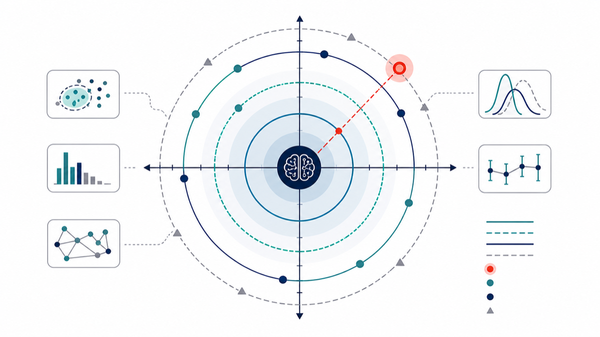
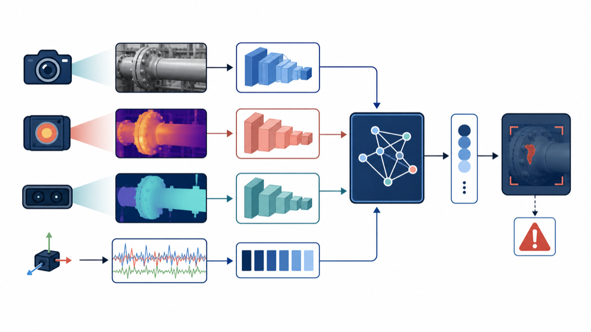
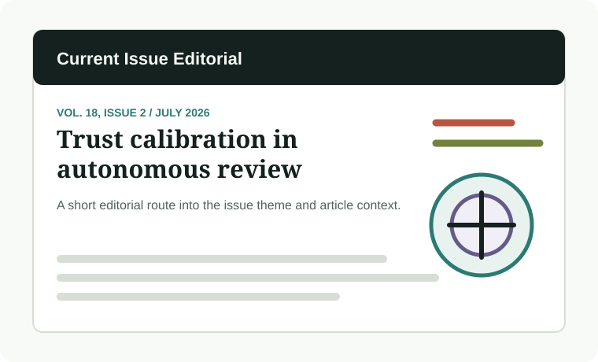

Current issue · 2026 Volume 31 Number 2
The International Journal of Intelligent Control and Systems
The current issue preview is organized around Editorial, Research Articles, and Communications and Letters.
Current issue · 2026 Volume 31 Number 2
The current issue preview is organized around Editorial, Research Articles, and Communications and Letters.
Call for Papers
Special Issue Editors: Jing Zhao, Jinwu Gao, Yuhu Wu, Lingxi Li, Xiaoxiang Na.
Author Resources
Authors submit through the IJICS login page, use Word or LaTeX templates, and can contact the Editorial Office by email for submission status.
Current issue

Editorial

Editorial

Editorial

Research Article

Research Article
Research Article
Research Article

Communications and Letters
Call for Papers

Special Issue Editors: Jing Zhao, Jinwu Gao, Yuhu Wu, Lingxi Li, Xiaoxiang Na.
Special Issue Editors: Mengzhen Kang, Marc Jaeger, Xiujuan Wang.
Special Issue Editors: Fuchun Sun, Dayi Wang, Hui Zhang.
News

The homepage can surface current-issue news separately from article categories, with source links kept available for verification.
Open issue pageEditorial identity, board roles, email, telephone, and office address are kept on the dedicated Editorial page and repeated in the footer directory.
Open editorial pageManuscript requirements, peer review thresholds, templates, copyright, APF, and the official submission path live on the Author Center page.
Open Author Center